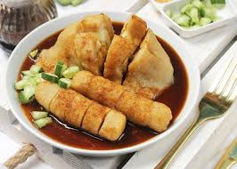

Pempek Palembang

Pempek Palembang memang adalah makanan khas Palembang. Kuliner ini terbuat dari ikan giling dan tepung kanji. Serta beberapa komposisi lain seperti telur, bawang putih yang dihaluskan, penyedap rasa dan garam. Sebenarnya sulit untuk mengatakan bahwa penganan pempek pusatnya adalah di Palembang karena hampir semua daerah di Sumatera Selatan memproduksinya. Pempek memiliki berbagai macam jenis, seperti pempek lenjer, pempek telor, pempek kapal selem, pempek kerupuk, pempek adalan, pempek pistel dan lainnya. Pertama siapkan bahan dasar Ikan Segar, biasanya ikan delek (gabus), tenggiri, kakap, atau ikan belida yang sudah semakin sulit ditemukan.
-
- Ikan segar 500 gr
- Tepung Sagu 500 gr
- Air 250 ml
- Garam halus 40 gr
- Penyedap 10 gr
-
- Ikan yang sudah digiling halus dicampur dengan air diaduk sampai rata,
- Masukkan garam dan penyedap diaduk sampai rata dan mengental,
- Masukkan sedikit demi sedikit tepung sagu sambil diuleni (diaduk) perlahan sampai rata dan tidak lengket di tangan.
- Adonan dasar dapat dibentuk sesuai selera.
- Kalau ingin membuat pempek yang di rebus, seperti pempek lenjer, pempek telor, atau kapal selam, didihkan air sebelum adonan membentuk adonan dasar. Kalau ingin membuat pempek yang langsung di goreng, seperti pempek adaan atau pempek kulit, panaskan wajan berisi minyak sebelum pempek di bentuk.
-
- Daging ikan sebaiknya yang segar.
- Untuk bahan dari ikan laut (seperti tenggiri, kakap dan lainnya) sebaiknya campurkan air jeruk kunci atau bawang putih halus pada campuran ikan dan air untuk menghulangkan aroma amis.
- Adonan pempek jangan terlalu banyak diaduk / diulen, cukup meratakan saja, agar pempek tidak keras.
- Untuk ikan laut juga sebaiknya menggunakan air dingin/es.